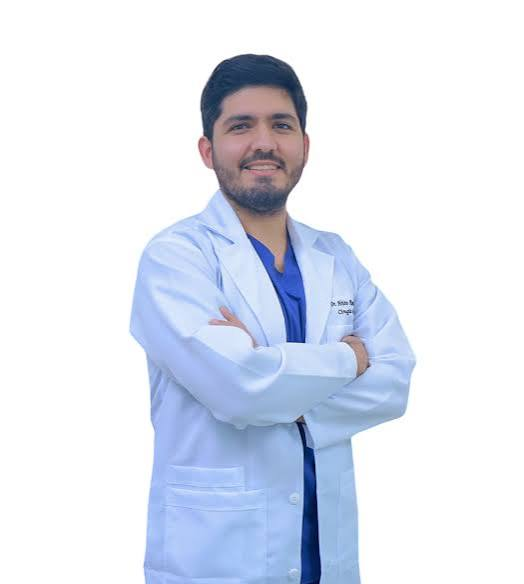

Nuestro Personal Médico
Dr. Francisco Meneses
Cardiologo
Especialista en enfermedades del corazon con mas de 10 años de experiencia.
ver perfil
Dra. Erika Zevallos
Pediatria
Especialista en atencion de afecciones y las preocupaciones de los niños relacionadas con su salud
ver perfil
Dr. Sebastian Olortegui
dermatologo
Especialista en Tratamientos avanzados para el cuidado de la piel.
ver perfilDr. Marco Rodriguez
medicina general
Especialista en evaluar síntomas, diagnosticar y tratar enfermedades comunes, y realizar chequeos preventivos.
ver perfilDr. Oscar Meneses
Medicina fisica y rehabilitacion
Especialista en diagnosticar, tratar y prevenir trastornos que causan dolor o limitan la movilidad. Su objetivo principal es restaurar la función física.
ver perfilDra. Sandra Orbegozo
Psicologia
Especialista en evaluar, diagnosticar y tratar trastornos mentales, emocionales y de conducta.
ver perfilDr. Mariano mondragon
Otorrinolaringologia
Especialista en diagnóstico y tratamiento de las enfermedades que afectan al oído, la nariz y la garganta, así como a toda la región de la cabeza y el cuello.
ver perfilDra. Sandra Coveñas
Urologia
Especialista en el diagnóstico y tratamiento de las enfermedades del tracto urinario (riñones, uréteres, vejiga y uretra) en hombres y mujeres
ver perfil